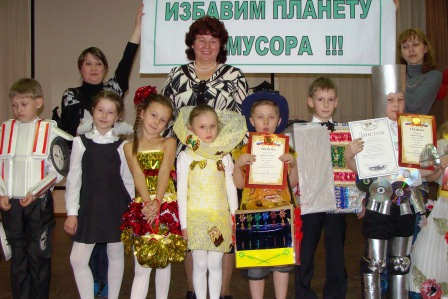

|  |
7 и 8 апреля в гимназии прошёл конкурс «Модники и модницы – 2011». Конкурс проводился для обучающихся начальной школы. Ребята получили задание: изготовить костюмы из вторичного материала и представить свою коллекцию моделей в творческой форме. За дело принялись совместно учителя, родители и, конечно, сами дети. Мероприятия прошли на высоком уровне, довольны остались все, даже те классы, которые не получили призовых мест. Главное, зарядились хорошим настроением, проявили свою фантазию и творчество. 1 место заняли:
|